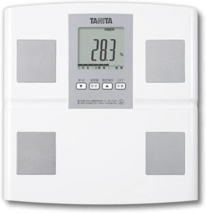

停滞から抜け出すための羅針盤：あなたの健康を可視化するタニタの知恵

私たちの多くは、健康について漠然とした不安を抱えながら日々を過ごしています。「最近、なんだか体が重い」「昔はもっと動けたのに」「このままで大丈夫なのだろうか」そんな言葉が頭をよぎる瞬間、あなたは一人ではありません。私たちが直面する現代社会は、情報過多でありながら、自身の体と真摯に向き合う時間を与えてくれません。鏡に映る自分を見て、理想とのギャップにため息をついたり、健康診断の結果に一喜一憂したり。しかし、その不安は、具体的に何が問題なのか、どうすれば改善できるのかが分からないからこそ、より一層深まるものです。まるで羅針盤を持たずに広大な海を航海しているような、心もとない感覚。この漠然とした不安こそが、私たちの健康への第一歩を阻む、最も大きな壁となっているのではないでしょうか。
この漠然とした不安が、具体的な苦痛へと変わる瞬間も少なくありません。例えば、以前は楽に登れた階段で息が上がるようになったり、少し体を動かしただけで疲労を感じたり。お気に入りの服がなぜかきつく感じたり、食事の量を控えめにしているのに体重が増え続けていたり。これらはすべて、あなたの体があなたに送っているSOSサインです。しかし、これらのサインを「年のせい」「気のせい」と片付けてしまい、見て見ぬふりをしてしまうこともしばしば。その結果、気がつけば健康上の問題が深刻化し、取り返しのつかない事態に陥ってしまうリスクを抱えています。過去にダイエットに挑戦しては挫折を繰り返し、自己嫌悪に陥った経験がある方もいらっしゃるかもしれません。様々な健康器具を試してみたけれど、結局長続きせず、押し入れの奥で埃をかぶっている……。そんな経験が、新たな挑戦へのハードルを上げてしまっているのです。私たちは皆、健康でいたいと心から願っているにもかかわらず、そのための具体的な行動に踏み出せないでいます。
私もかつて、漠然とした不調に悩まされ、どうすれば良いのか途方に暮れた時期がありました。健康に関する情報は溢れかえり、どれを信じればいいのか、何から手をつければいいのか、全く分かりませんでした。まるで暗闇の中で手探り状態。流行のダイエットに飛びついてはリバウンドを繰り返し、高価なサプリメントを試しても効果を実感できず、結局は時間とお金を無駄にしてしまうばかりでした。その度に、自己嫌悪に陥り、「自分には健康になる才能がないのか」とさえ思ってしまうことも。しかし、ある時、一つのシンプルなツールと出会い、私の健康への意識は劇的に変化しました。それは、タニタ 体組成計 BC-705Nという名の、あなたの体の「今」を正確に映し出す鏡でした。これまでの健康へのアプローチがなぜうまくいかなかったのか、その理由を突き詰めていくと、根本的な問題点が見えてきます。それは、「自分の体の状態を正確に把握できていなかった」という点に集約されます。例えば、体重だけを見て一喜一憂しても、それが脂肪なのか筋肉なのか、区別がつかない限り、効果的な対策は立てられません。闇雲に食事制限をしたり、運動量を増やしたりしても、それは的外れな努力になりかねません。かつての私は、まさにその典型でした。
では、なぜ既存の体重計や、巷に溢れる健康情報だけでは、私たちの悩みを根本的に解決できなかったのでしょうか？ 多くの家庭用体重計は、ただ単に体重を測るだけの機能しか持ち合わせていません。それでは、表面的な変化しか捉えることができず、体の内部で何が起こっているのか、例えば脂肪が増えているのか、筋肉が減っているのかといった、健康にとって本当に重要な情報は得られません。また、簡易的な体脂肪計も存在しますが、その精度には疑問が残るものも少なくありません。さらに、インターネットや雑誌で手に入る健康情報は、断片的であったり、あなた自身の体に特化したものではありません。一般的なアドバイスは、あくまで一般的なものであり、あなたの具体的な状況や目標に合致しない場合も多々あります。特定の食品や運動法を試しても、期待する結果が得られないのは、あなたの体の個性や現状が考慮されていないからです。
タニタ 体組成計 BC-705Nは、この根本的な課題に正面から向き合い、解決策を提供します。単なる体重計の枠を超え、あなたの体の構成要素を詳細に分析することで、これまで見えなかった「健康の羅針盤」を提供してくれるのです。例えば、体重が同じでも、体脂肪率が高ければそれは隠れた肥満であり、内臓脂肪レベルが高ければ生活習慣病のリスクを抱えている可能性があります。反対に、体重が増えていても、それが筋肉量の増加によるものであれば、それは健康的な変化と捉えることができます。従来の手段では、これらの重要な情報を得ることは極めて困難でした。専門の医療機関を受診すれば可能かもしれませんが、費用も時間もかかりますし、日常生活の中で継続的に測定することは現実的ではありません。
タニタ 体組成計 BC-705Nは、まるで専属の健康コンサルタントがあなたの家に常駐しているかのように、あなたの体を深く理解し、具体的な改善への道筋を示してくれます。この一台が提供する情報は、単なる数字の羅列ではありません。あなたの努力がどのように体に反映されているのか、どんな変化が起こっているのかを明確に示し、日々のモチベーションへと繋がる、かけがえのないデータとなるでしょう。
まず、この製品の核心的な機能である**「乗るピタ機能」**について詳しく解説しましょう。これは、まさに「手間いらず」という言葉がぴったりな機能です。あなたが体重計に乗ると、登録されたユーザーの中からあなたを自動的に認識し、すぐに測定を開始します。これまでの体重計のように、いちいちボタンを押して個人設定を呼び出したり、体重計を叩いて電源を入れたりする必要は一切ありません。忙しい朝でも、疲れて帰宅した夜でも、意識することなくスムーズに測定が完了します。この手軽さこそが、測定を習慣化するための最も重要な要素であり、多くの人が過去に健康管理を挫折してきた大きな理由の一つである「面倒くさい」という感情を完全に排除します。この「乗るピタ機能」は、技術の進化が私たちの日常生活にどれほどスムーズに溶け込めるかを示しています。まるで賢い執事が、あなたが何も言わずとも必要なものを差し出してくれるような、そんな感覚を覚えることでしょう。
次に、この体組成計が計測する多岐にわたる測定項目について深掘りしていきます。これこそが、単なる体重計とは一線を画す、この製品の真骨頂です。
体重: これは最も基本的な項目ですが、タニタ 体組成計 BC-705Nは100g単位（100kg以上は200g単位）という非常に細かな単位で測定するため、わずかな変化も見逃しません。日々の食事や運動による細かな体重の変動を把握することで、より具体的な行動計画を立てる際の基盤となります。
体脂肪率: 体重だけでは分からない、体の「質」を示す重要な指標です。体脂肪率が高いと、見た目だけでなく、生活習慣病のリスクも高まります。この数値を見ることで、体重の増減が脂肪によるものなのか、それとも筋肉によるものなのかを判断できます。
BMI（Body Mass Index）: 身長と体重から算出される肥満度を示す国際的な指標です。自分自身の体が、標準体重と比べてどの位置にあるのかを客観的に把握することができます。
筋肉量: 健康的な体づくりにおいて、非常に重要な要素です。筋肉は基礎代謝を高め、消費カロリーを増やすだけでなく、体の機能を維持し、活動的な生活を送る上で不可欠です。筋肉量が少ないと、疲れやすくなったり、転倒のリスクが高まったりする可能性があります。この数値を見ることで、適切な運動ができているか、栄養バランスが取れているかを確認できます。
内臓脂肪レベル: 内臓の周りにつく脂肪の量を示す指標で、生活習慣病との関連が深いことで知られています。このレベルが高い場合、食生活の見直しや運動習慣の確立が急務であることが示唆されます。目に見えない部分だからこそ、数値で確認できることの重要性は計り知れません。
基礎代謝量: 私たちが生きるために最低限必要なエネルギー量です。この数値が高いほど、消費カロリーが多く、太りにくい体質であると言えます。筋肉量と密接な関係があり、筋肉量が増えれば基礎代謝量も上がります。自分の基礎代謝量を知ることで、一日に必要な摂取カロリーの目安を立て、無理のないダイエットや健康維持が可能になります。
体内年齢: これは、体組成のバランスから算出される、あなたの体の状態を「年齢」として表現したものです。実年齢よりも若ければ、健康的な生活を送れている証拠であり、モチベーションに繋がります。逆に実年齢よりも高ければ、改善すべき点があることを示唆してくれます。これは、非常に分かりやすく、多くの人にとって具体的な目標設定の助けとなる指標です。
これらの項目が、ただ表示されるだけでなく、文字高30mmの大型表示と自動スクロール表示機能によって、立ったままでも非常に見やすいという点も特筆すべきです。屈んで小さな画面を覗き込む必要がなく、測定後すぐに結果を把握できます。また、前回値表示機能があるため、前回の測定値と今回の測定値を瞬時に比較できます。これにより、日々の変化を直感的に捉え、自身の努力がどのように実を結んでいるのかをリアルタイムで確認できるため、継続的なモチベーションを維持する上で絶大な効果を発揮します。
さらに、この体組成計にはアスリートモード機能も搭載されています。これは、日頃から運動習慣があり、体格が通常の方よりも筋肉質な方に適したモードです。アスリートモードを使用することで、より正確な体組成の測定が可能となり、日々のトレーニングの成果を細かく把握できます。これは、まさに「個別最適化」の思想が具現化された機能であり、幅広いユーザー層のニーズに応えるきめ細やかな配慮と言えるでしょう。
登録人数は5人まで可能であり、さらにゲストモードも搭載しています。これにより、家族全員で健康管理に取り組めるだけでなく、友人が遊びに来た際にも気軽に測定を楽しむことができます。健康は一人で抱え込むものではなく、身近な人と共有することで、より楽しく、より継続しやすいものへと変わります。この共有体験は、健康管理のモチベーションをさらに高めるでしょう。
この製品の裏側には、タニタが長年培ってきた高精度な体組成計技術があります。体組成計は、体内に微弱な電流を流し、その電気抵抗（インピーダンス）から体組成を推定するという原理に基づいています。しかし、単に電流を流すだけでは正確なデータは得られません。電流が流れる経路や、体の水分量、測定時の姿勢など、様々な要因が測定値に影響を与えます。タニタは、これらの要因を考慮し、独自のアルゴリズムと高い技術力によって、家庭用体組成計としては極めて高精度な測定を実現しています。長年の研究と膨大なデータに基づいたその精度は、多くの医療機関や研究機関でも信頼されており、その技術力は折り紙付きです。
ここで、よくある疑問に触れておきましょう。「他のメーカーの体組成計とどう違うのか？」この疑問は当然抱かれるでしょう。世の中には様々な体組成計が存在しますが、その多くは価格競争に巻き込まれ、測定精度や機能が犠牲になっているケースも少なくありません。例えば、安価な体組成計の中には、体脂肪率や筋肉量の測定が非常に大まかであったり、体重以外の項目が単なる推定値に過ぎないものも存在します。これでは、正確な体の状態を把握することはできませんし、かえって誤った情報に基づいて健康管理を進めてしまうリスクさえあります。
タニタ 体組成計 BC-705Nは、単なる機能の羅列や価格の安さを追求するのではなく、「正確性」と「使いやすさ」に徹底的にこだわっています。先に述べた高精度な測定技術は、タニタの長年の研究開発の賜物であり、この点で競合他社とは一線を画しています。また、乗るピタ機能のような「ユーザー目線に立った使いやすさ」も、タニタの製品が選ばれる大きな理由です。日々の生活の中で、ストレスなく、むしろ楽しみながら健康管理を続けられる設計思想が、この製品には深く根付いています。
さらに、タニタは「日本製」であることにもこだわっています。日本の厳しい品質基準を満たす製品は、安心感と信頼感を与えます。製品の耐久性やアフターサービスにおいても、その安心感は大きなアドバンテージとなるでしょう。海外製の安価な製品の中には、初期不良や故障時の対応に不安が残るものも少なくありませんが、タニタの製品であれば、長期にわたって安心して使い続けることができます。
実際にタニタ 体組成計 BC-705Nを使用している人々の声に耳を傾けてみましょう。これは、製品の客観的な評価を知る上で非常に重要な視点です。
「以前は体重計に乗ること自体が億劫でしたが、この体組成計にしてから、毎日進んで測るようになりました。『乗るピタ』機能が本当に便利で、全くストレスがありません。特に、体重だけでなく体脂肪率や筋肉量の変化が数字で見えるので、ダイエットのモチベーションが格段に上がりましたね。今まで漠然と運動していましたが、筋肉量が上がると基礎代謝も上がることを知り、筋トレにも熱が入るようになりました。」（30代女性）
「健康診断で内臓脂肪が多いと言われ、危機感を感じて購入しました。初めは半信半疑でしたが、毎日測り続けることで、食生活の改善や運動の効果が内臓脂肪レベルとして現れるのが分かり、本当に感動しました。今では、家族みんなで健康データを共有して、互いに励まし合いながら健康維持に努めています。日本製という安心感も大きいです。」（50代男性）
「高齢の母のために購入しました。操作がシンプルで、表示も大きいため、機械に不慣れな母でも簡単に使うことができています。特に体内年齢が表示されるのが面白いらしく、実年齢より若く表示されると嬉しそうにしていますね。これまでは漠然とした健康不安がありましたが、具体的にどの数値がどう変化しているのかが分かり、安心感が増したようです。」（40代女性）
これらの声からも分かるように、タニタ 体組成計 BC-705Nは、単に数値を測るだけでなく、使用者の行動変容を促し、健康への意識を高める効果があることが分かります。特に「継続しやすさ」と「数値の分かりやすさ」が高く評価されているようです。過去に健康管理に失敗した経験がある方でも、この製品であれば新たなスタートを切りやすいと感じるのではないでしょうか。
あなたがこの体組成計を手に入れたとき、あなたの健康に対する意識と行動は、これまでとは比べ物にならないほど変化していくでしょう。想像してみてください。朝、目覚めて洗面所に向かう際、あなたは意識することなくタニタ 体組成計 BC-705Nの上に足を乗せるでしょう。ピッと音がして、あなたの今日の健康データが瞬時に表示されます。
まず、体重。これはあなたの努力の第一歩を示す数字です。そして、体脂肪率。昨日の食事があなたの体にどう影響したのか、あるいは週末の運動がどれほど効果的だったのかを教えてくれるでしょう。筋肉量の変化を見れば、あなたが取り組んでいる筋力トレーニングが着実に身を結んでいることが実感できます。
もし、前日に少し食べ過ぎてしまったと感じる日があれば、内臓脂肪レベルに少しだけ変化が見られるかもしれません。それは、あなたの体が「もう少しバランスを考えてね」と優しく教えてくれているサインです。逆に、体を動かした日や、バランスの取れた食事を心がけた日には、体内年齢が若返っているのを見て、思わず笑みがこぼれるかもしれません。
これらのデータは、あなたにとってただの数字ではありません。それは、あなたの努力を肯定し、次の行動へと駆り立てる具体的な情報です。漠然とした不安は消え去り、あなたの健康への道は、まるで最新のGPSのように、明確な指示で照らされることになります。例えば、体脂肪率が目標に近づいていれば、「よし、この調子で続けよう！」とモチベーションが向上します。もし、筋肉量がなかなか増えないと感じたら、「もしかしたらプロテインの摂取量を増やした方が良いかな？」と具体的な改善策を考えるきっかけになるでしょう。
これまで、あなたは「もっと健康にならなきゃ」と頭では分かっていても、何から手をつければいいのか分からず、ただ時間だけが過ぎていったかもしれません。しかし、この体組成計があれば、あなたは常に自分の体の状態を客観的に把握し、最適な行動を選択できるようになります。これは、まるであなたの体の「取扱説明書」を手に入れるようなものです。自分の体の個性や、今、何が必要なのかが明確になることで、無駄な努力をせずに、効率的に健康目標を達成できるようになります。
この体組成計がもたらす変化は、数値的な改善だけに留まりません。あなたの内面に大きな安心感と自信をもたらすでしょう。健康に対する漠然とした不安が、具体的な目標と計画に変わり、日々の生活に確かな手応えを感じられるようになります。
例えば、これまで健康について話すときに「最近疲れやすくて…」と漠然とした表現しかできなかったのが、「最近、基礎代謝量が上がってきて、体が軽くなった気がする」といった具体的な変化を語れるようになるかもしれません。友人や家族との会話の中でも、健康に関する話題で自信を持って発言できるようになるでしょう。
また、健康的な体は、単に病気になりにくいというだけでなく、あなたの**生活の質（QOL）**全体を向上させます。体が軽くなれば、これまで億劫だった外出や趣味にも積極的に取り組めるようになるでしょう。仕事のパフォーマンスも向上し、集中力が増し、より効率的に作業を進められるようになるかもしれません。休日のアクティビティも、以前よりもずっと楽しめるようになるでしょう。
この体組成計は、あなたの健康管理を効率化し、時間と労力の負担軽減にも大きく貢献します。病院での精密検査や高価な健康器具を次々に試す必要がなく、自宅で手軽に、そして継続的に高精度のデータを取得できるからです。これは、まさに「時短」と「安心感」を両立させる、現代のライフスタイルに合致した健康管理ツールと言えるでしょう。
競合製品との比較をもう少し掘り下げてみましょう。多くのスマート体重計は、スマートフォンアプリとの連携を謳っていますが、そのアプリの使いやすさやデータ管理の柔軟性には大きな差があります。中には、アプリが途中で更新されなくなったり、データが不安定だったりするものも散見されます。しかし、タニタ 体組成計 BC-705Nは、本体の表示のみで主要なデータを確認できるため、スマートフォンの有無に関わらず、誰でも迷わず使うことができます。もちろん、より詳細なデータ管理やグラフ化を望むのであれば、別途対応アプリ（例えば「ヘルスプラネット」など）と連携させることで、さらに深く健康状態を分析することも可能です。しかし、このBC-705N単体で、日々の健康管理に必要な情報は十分に賄えるという点が、多くのユーザーにとっての「安心感」に繋がっています。
また、一部の体組成計は、デザイン性を重視するあまり、測定台が小さく不安定であったり、お手入れがしにくい素材で作られていたりする場合があります。しかし、BC-705Nは、安定した測定を可能にする設計と、サッと拭き取れる清潔な素材で作られているため、使い勝手と衛生面の両方で「安心感」を提供します。これは、長く使い続ける上で非常に重要なポイントです。
この体組成計をあなたの生活に取り入れることは、単なる家電製品の購入以上の意味を持ちます。それは、あなたの健康に対する投資であり、未来の自分への約束です。
あなたが目標とする理想の未来像を具体的に思い描いてください。それは、朝、目覚めと共に体が軽く感じ、すぐにベッドから起き上がれるような日々かもしれません。鏡に映る自分の姿に、自信と満足感を感じる姿かもしれません。以前は諦めていたスポーツや趣味に、再び挑戦できるようになることかもしれません。あるいは、家族や友人と、より活動的に、そして長く一緒に過ごせるようになることかもしれません。
タニタ 体組成計 BC-705Nは、その理想の未来へとあなたを導く、かけがえのないパートナーとなるでしょう。あなたの体から発せられる微かなサインを捉え、それを分かりやすい「言葉」に変換し、あなたに最適な行動を促してくれます。これまでぼんやりとしていた健康への道筋が、鮮明な一本道となり、あなたは迷うことなくその道を歩んでいけるようになります。
あなたがこの体組成計と共に歩み始めることで、日々の食事が、単なる空腹を満たす行為から、体を育む大切な時間へと変わるでしょう。運動は、苦痛な義務から、体力を高め、心をリフレッシュする喜びへと変わるかもしれません。そして何よりも、あなたは自分自身の体をより深く理解し、愛することができるようになるでしょう。それは、これまであなたが抱えていた健康への不安や、過去の失敗の記憶を、ポジティブな変化と安心感へと変えるプロセスです。この体組成計が、あなたの健康への旅路を、より豊かで、より実りあるものにしてくれることを、私は確信しています。
商品詳細・ご購入はこちら